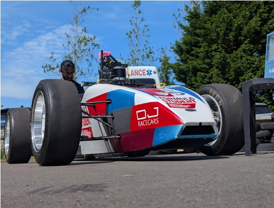
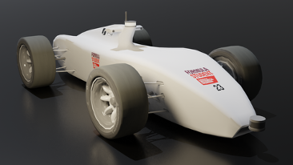
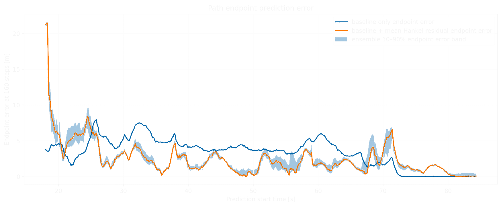

Autonomous Systems · System Identification
Data-Enabled System Identification


Developed a hybrid data-driven prediction method in which past input-output trajectories are used to estimate the residual error of a nominal vehicle model. LiDAR uncertainty and IMU drift were incorporated to improve robustness, resulting in approximately 50% lower prediction error than the baseline model.
Technical Approach
A nominal nonlinear bicycle model was used to generate an initial prediction of the vehicle dynamics. Historical input-output data were then used to learn the residual between the model prediction and measured vehicle behaviour.
The predictor also incorporated LiDAR measurement uncertainty and IMU drift, allowing the identified dynamics to account for both model mismatch and sensor uncertainty.

Results


Lower Prediction Error
The hybrid data-enabled model achieved approximately 50% lower prediction error than the nominal nonlinear bicycle model on real-world vehicle data.